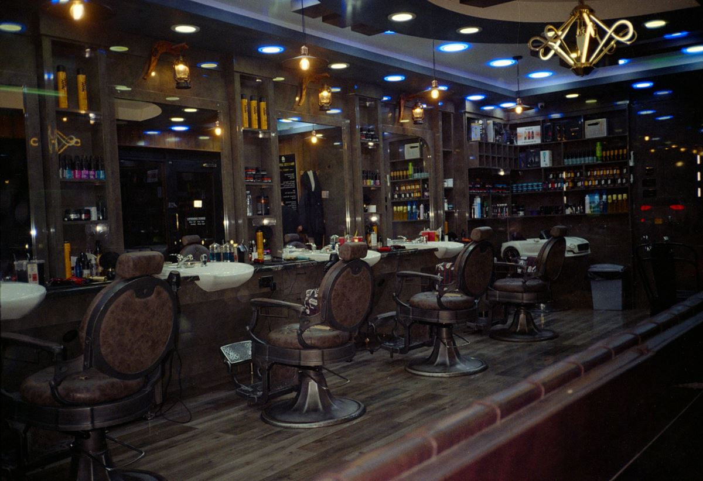
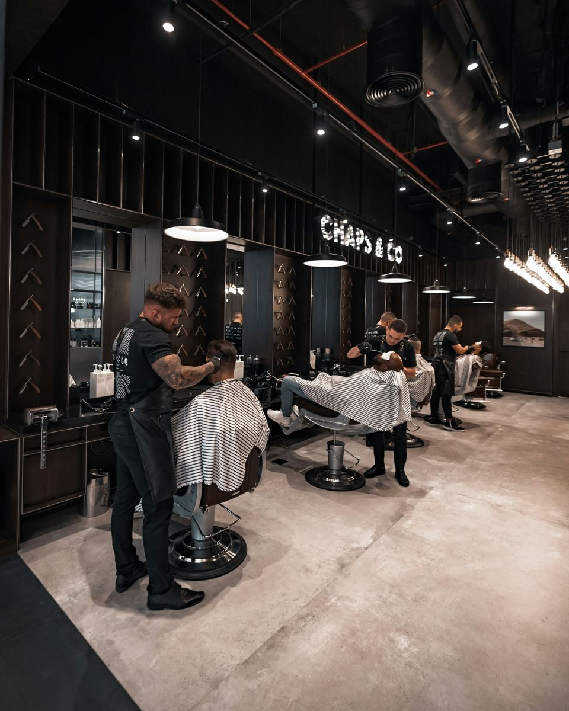
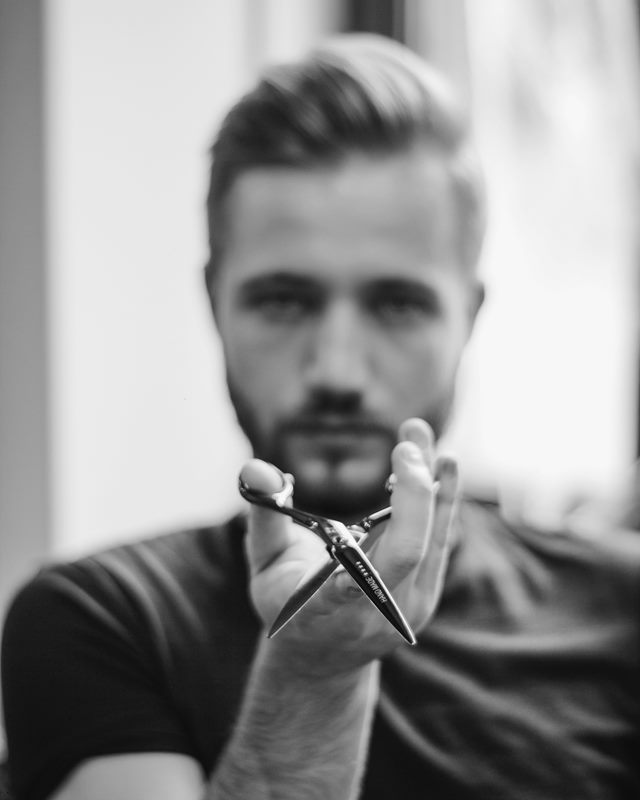
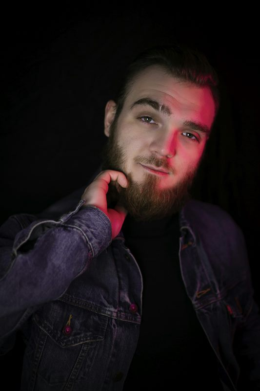
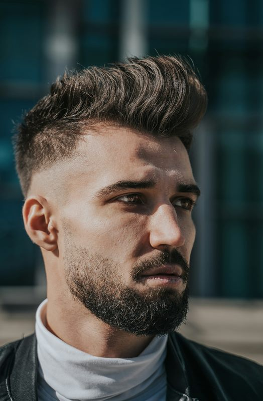

O nas i załoga
Barber w Gdyni, kilka ulic od nabrzeża. Trzech barberów, granatowe ściany, mosiądz i kawa na start.

Historia
Miejsce, które czuć portem
Kotwica Barber Club powstała w 2019 roku kilka ulic od nabrzeża, bo Gdynia zawsze żyła z portu, a my chcieliśmy miejsca, które to czuć. W środku granat, mosiądz, ciemne drewno i liny zamiast tapety.
Na fotelu siadasz na tyle, ile trzeba: nie robimy strzyżeń na akord, każda wizyta zaczyna się od rozmowy o tym, czego chcesz i jak układasz włosy na co dzień.
- 2019rok podniesienia bandery
- 3barberów w załodze
- Kawaw cenie każdej wizyty

Na pokładzie
Klasyka, fade i brzytwa
Robimy klasyczne strzyżenia nożyczkami, nowoczesne fade'y, modelujemy i farbujemy brody, golimy brzytwą z gorącym ręcznikiem.
Strzyżemy też dzieci, a w soboty zapraszamy ojców z synami na wspólny pakiet. Rezerwujesz online w minutę, a przypomnienie przyjdzie SMS-em i mailem.
Lista załogi
Załoga
Każdy ma swoją specjalność. Przy rezerwacji wybierasz, do kogo siadasz.
-

Kacper
Właściciel, master barber
Strzyże od 2014 roku, wcześniej pracował w barberach w Gdańsku i Londynie. Kotwicę otworzył w 2019. Najlepiej czuje się w klasycznych strzyżeniach nożyczkami i dłuższych fryzurach.
- Strzyżenie męskie klasyczne
- Strzyżenie nożyczkami (dłuższe włosy)
- Skin fade
- Trymowanie i modelowanie brody
- Pakiet Kapitan
- Pakiet Admirał
-

Bartosz
Barber, specjalista od brody i golenia
Sam nosi brodę od dziesięciu lat, więc wie, jak ją prowadzić. Odpowiada za golenie brzytwą z gorącym ręcznikiem i koloryzację brody.
- Strzyżenie męskie klasyczne
- Strzyżenie maszynką na jedną długość
- Trymowanie i modelowanie brody
- Konturowanie brody brzytwą
- Koloryzacja brody
- Golenie brzytwą z gorącym ręcznikiem
- Golenie głowy brzytwą
- Pakiet Kapitan
- Pakiet Admirał
-

Igor
Barber, specjalista od fade'ów
Najmłodszy w załodze, mistrz płynnych przejść i nowoczesnych fryzur. Ma cierpliwość do najmłodszych klientów, dlatego to on prowadzi strzyżenia dziecięce i pakiet Ojciec i syn.
- Skin fade
- Strzyżenie maszynką na jedną długość
- Strzyżenie dziecięce (do 12 lat)
- Ojciec i syn
- Trymowanie i modelowanie brody
- Odsiwianie włosów
- Depilacja woskiem nosa i uszu
- Pakiet Kapitan